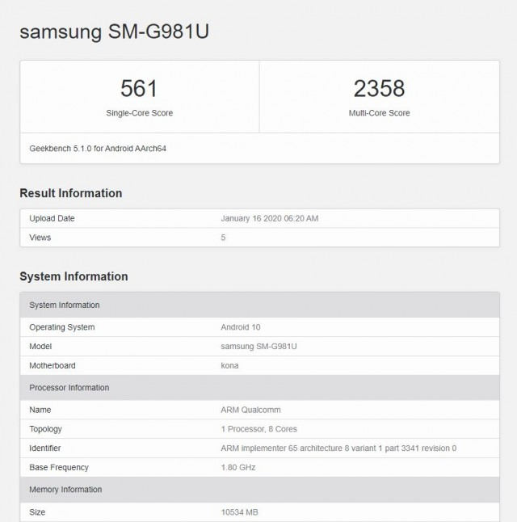
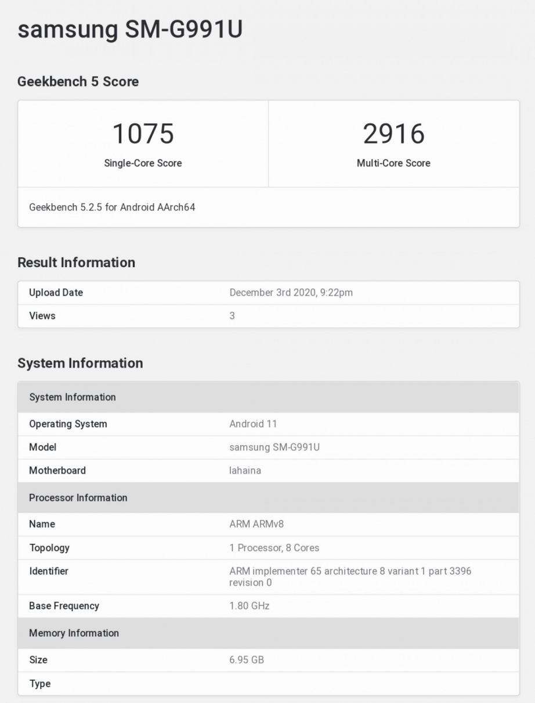

What is Benchmark?
일반적으로 컴퓨터, 스마트폰 등 전자기기의 연산성능을 시험하여 수치화하는 것을 말하는 단어. 본디 벤치마크의 사전적 의미는 '토지 측량에서 사용되는 수준 기표'를 의미한다. 즉 어떤 것이 높고 낮음을 나타내는 기준점을 의미하는데, 현대 용어 사전에서는 이를 '명백한 판정으로 결정 지을 수 있는 표준'이라고 확대 해석하고 있다. 즉 벤치마크가 담고 있는 의미는 조사 대상을 여러 가지 방법으로 측정하여 누구라도 인정할 수 있도록 표준화시키는 과정이라고 할 수 있다. 특히 전산용어로써 벤치마크는 여러 가지 전자기기의 성능을 비교 평가하는 의미의 동사로 쓰이고 있으며 주로 소프트웨어보다는 하드웨어 부분에 많이 적용되고 있다. 컴퓨터 게임 상에서 종종 보이는 벤치마크 기능은 이를 보여주기 위해 게임의 엔진이 구현할 수 있는 최상급의 환경을 조성한 뒤, 사용자의 컴퓨터로 구동해보는 것을 말한다.
Benchmark Score(snapdragon 865 vs exynos 2100)
 좌측이 s20의 스냅드래곤865고 우측이 s21의 엑시노스2100이다. 경향성 측면에서 보면 확실히 갤럭시 S21의 프로세서 성능이 전작인 S20과 비교해 싱글코어 및 멀티코어 모두 좋아졌다.
하지만 아이폰 12와 비교해서는 여전히 열세를 보이고 있는 것으로 나온다. 톰즈가이드에서는 엑시노스 2100에 대한 테스트 결과가 없지만 폰아레나에서 실시한 결과로부터 유추해 본다면 엑시노스 2100이 장착된 갤럭시 S21 경우 아이폰 12와 비교해 싱글코어 성능은 확실히 열세이지만, 멀티코어 성능은 어느정도 격차를 줄였다고 보인다.
결론적으로 아이폰 12가 현존하는 스마트폰 중에서는 가장 프로세서 성능이 뛰어난 스마트폰이고 그다음이 갤럭시 S21이라고 보면 될 것 같다.
따라서 현존 안드로이드 스마트폰에서 가장 좋은 성능을 가진 핸드폰은 갤럭시 S21이다. 실제로 체감 성능은 프로세서 외에도 시스템 전반의 구성에 따라 바뀔 수 있다.
프로세서 성능이 올라가면 그만큼 배터리 소모는 빨라지는 트레이드오프가 발생하기 때문에 모바일 기기라는 특성에서 종합적으로 살펴보고 본인에게 맞는 기기를 선택하는 게 좋을 것 같다.
확실한 건 갤럭시 S21이 갤럭시 S20보다 빨라졌다는 것이고 전작에 대비해 출시 가격을 낮추어 나왔기 때문에 여러모로 안드로이드 스마트폰을 사용하는 분들은 구모델보다는 신모델인 S21을 선택하는 게 나은 선택으로 보인다.